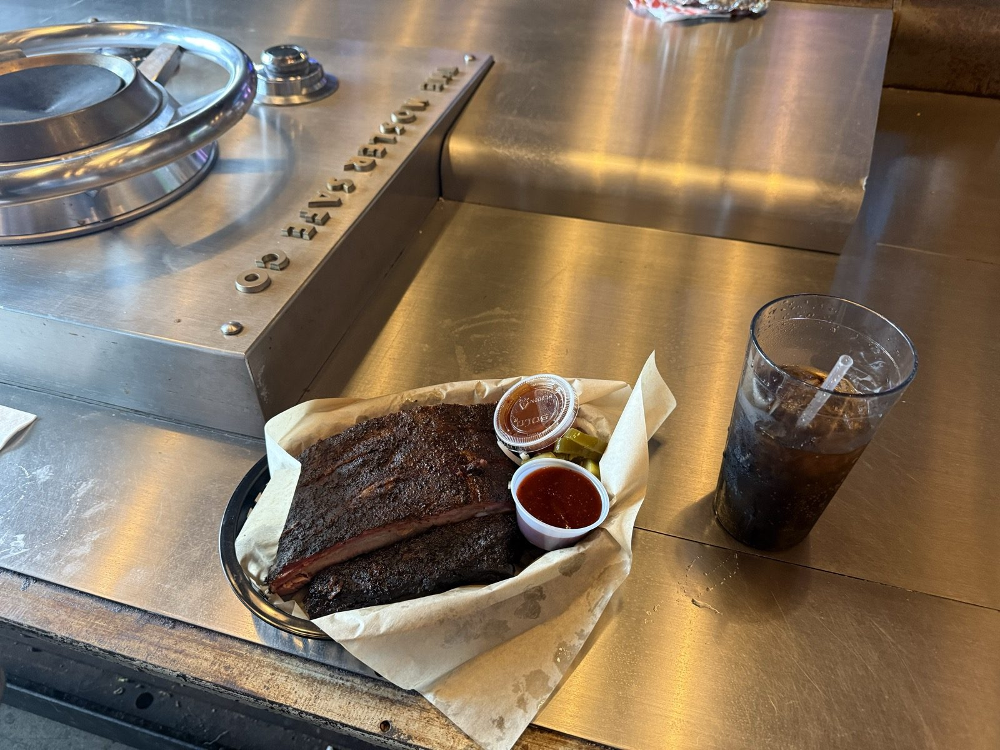
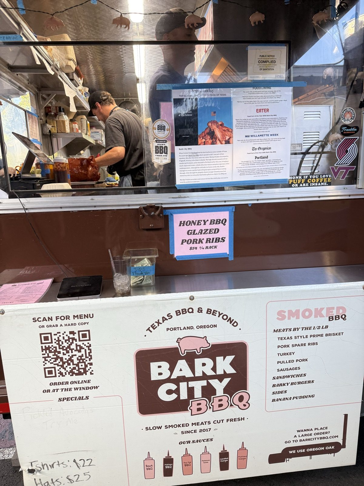
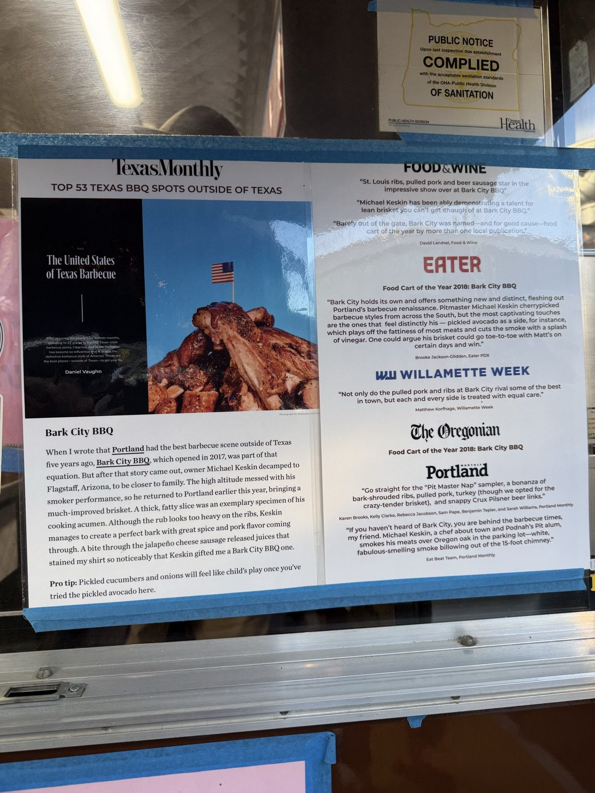
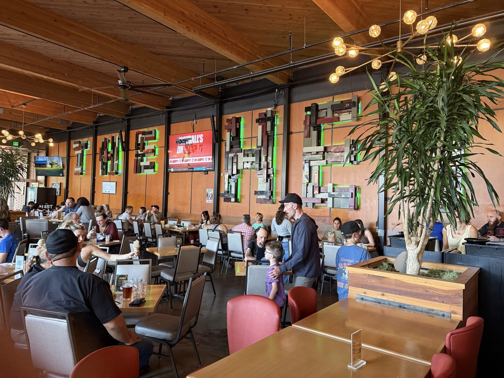
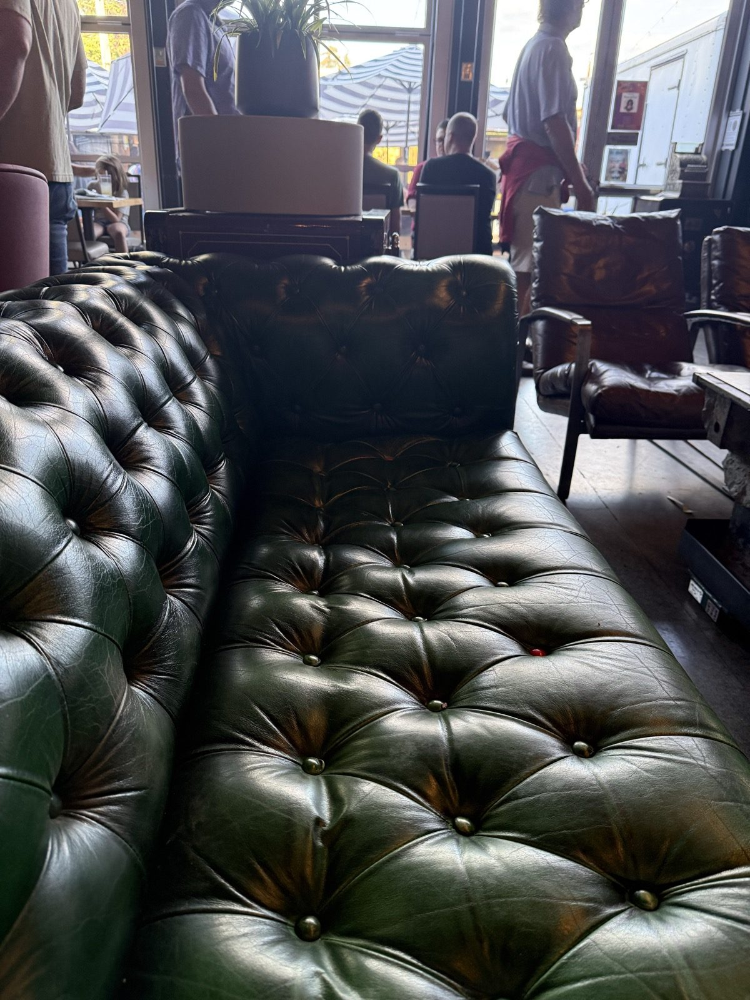
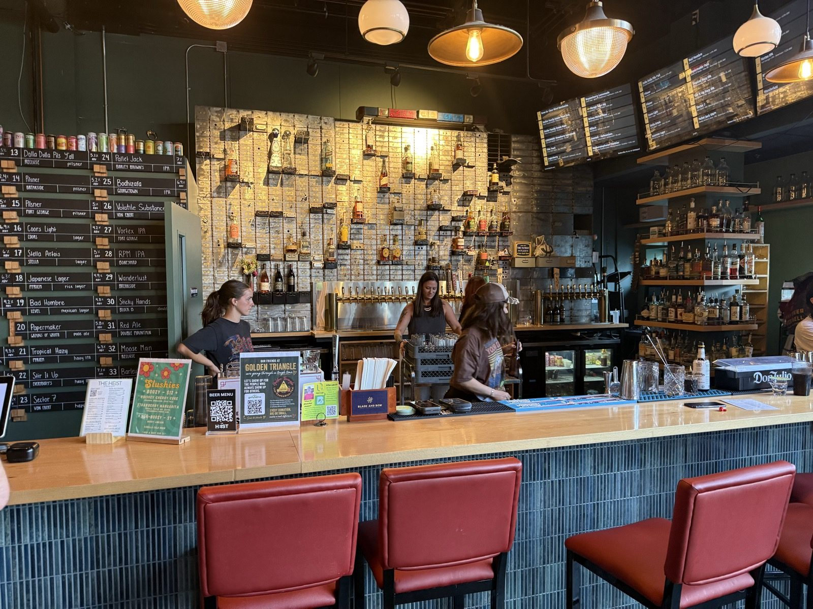
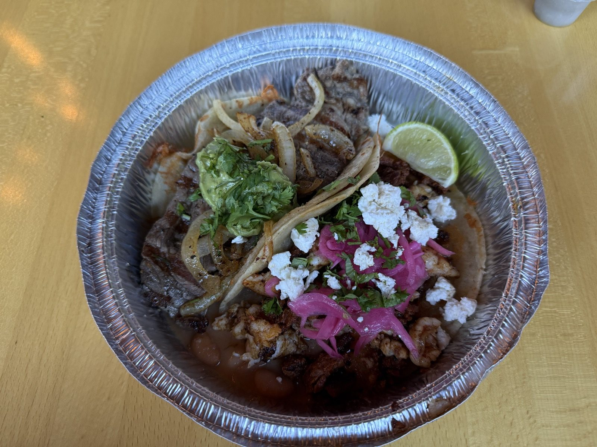

The Best Barbecue I've Ever Had, at Bark City BBQ

The Heist is a food cart pod built inside a former US Bank branch on SE Woodstock Blvd in Portland, Oregon, and the ribs I had there last night — from a cart called Bark City BBQ, on the table pictured above, built right around the old vault mechanism — are the best barbecue I've ever had. Five out of five, no hedging.
Is Bark City BBQ the best barbecue in Portland?
As far as I'm concerned, yes. That's a heavy, dark bark on the ribs in the photo above, and it's the best barbecue I've had, full stop. I'm not the only one who thinks so, either — the cart has a whole page of press taped up by the order window: Texas Monthly's list of the Top 53 Texas barbecue spots outside of Texas, both Eater and The Oregonian naming it Portland's Food Cart of the Year in 2018, and writeups from Food & Wine, Willamette Week and Portland Monthly on top of that. Pitmaster Michael Keskin has been running it since 2017.


What else is at The Heist?
The Heist opened in 2023 inside a US Bank branch that closed in 2020, and it kept the bones of the building on purpose — the bar sits where the drive-through teller window used to be, and the vault itself is still built into the space, including the table Bark City BBQ's ribs landed on above. Roughly two dozen carts fill the rest of the old bank and its parking lot, and one I've already written up, Tacos Fita, is just a few steps away in the same pod. The carne asada taco there is even better than their ribeye taco — and the ribeye is already excellent. Both five out of five.
Why is it called The Heist?
Because something actually happened here. On September 18, 2010, at 11:40am, two masked robbers walked into the US Bank that stood on this exact spot, fired a round into the ceiling to announce themselves, and left with $11,490 — including bait bills the bank had marked in advance specifically to trace them. It wasn't a one-off: the same crew hit a second US Bank branch across town in the Cully neighborhood three weeks later, on October 8, for $22,490 combined between the two jobs. Police arrested a trio — Stanley Ames, Pamela McGowan and Eric Wilcoxson — that November. When the building reopened as a food cart pod in 2023, the new owners leaned into the story instead of covering it up: the name, the vault built into the furniture, even some of the artwork on the walls nod to it directly.
The neighborhood itself has been here a lot longer than the bank was. Woodstock was platted in 1889 as one of Portland's first streetcar suburbs — the line was running by the end of 1890, and the neighborhood had its own post office by January 1891. The name has nothing to do with the 1969 music festival, which was still 80 years off; it's borrowed from Sir Walter Scott's 1826 novel Woodstock, from back when developers still named their subdivisions after novels instead of themselves. Reed College is two blocks away, and Woodstock Blvd — the same street The Heist sits on — has been the neighborhood's main commercial strip ever since.


There's a full bar with a long tap list if that's what you're after, but I kept it simple: a refillable Coca-Cola, $4, with free refills while I worked through the ribs.

Tacos Fita wasn't the only other stop — here's the plate from last night, carne asada under pickled onion, cotija and guacamole.

The vault's still there. They just put a rib basket on it.
The practical bit
The Heist — 4727 SE Woodstock Blvd, Portland, Oregon 97206, inside the old bank building. 📍 Get directions
Bar hours: Sunday–Thursday 10am–9pm, Friday–Saturday 10am–10pm.
Bark City BBQ: Wednesday noon–5pm, Thursday–Sunday 11am–7:30pm. Closed Monday and Tuesday.
Worth knowing: get there hungry. Between Bark City BBQ, Tacos Fita and roughly twenty other carts under one roof, indecision is the real risk, not the food.
Right across the lot is Pizza Roma, if you still have room after all that.